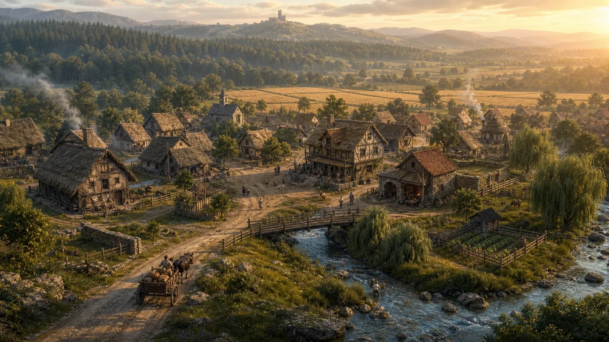

Aventuras e campanhas
Crônicas de Valédria
Módulos prontos para jogar no cenário. Cada crônica usa o Códice como base, mas pode ser adaptada, encurtada, expandida ou completamente alterada pelo Mestre.
Separação importante: o Livro do Mestre ensina a narrar Valédria. As Crônicas apresentam histórias específicas. Nada nesta página é obrigatório para o cânone de uma mesa.

Área do Mestre
Os bastidores da sua próxima história
Esta área reúne os antagonistas, as pistas, as reviravoltas e os possíveis desfechos de cada crônica. Foi pensada para quem conduz a mesa: leia os bastidores, escolha o que combina com seu grupo e prepare as revelações no seu ritmo. Se você vai jogar, explore a apresentação da vila acima e preserve as surpresas da aventura.
Solicite ao organizador da mesa o usuário e a senha de acesso.